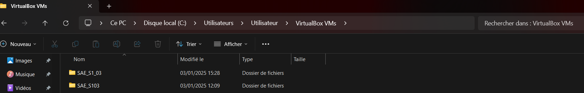
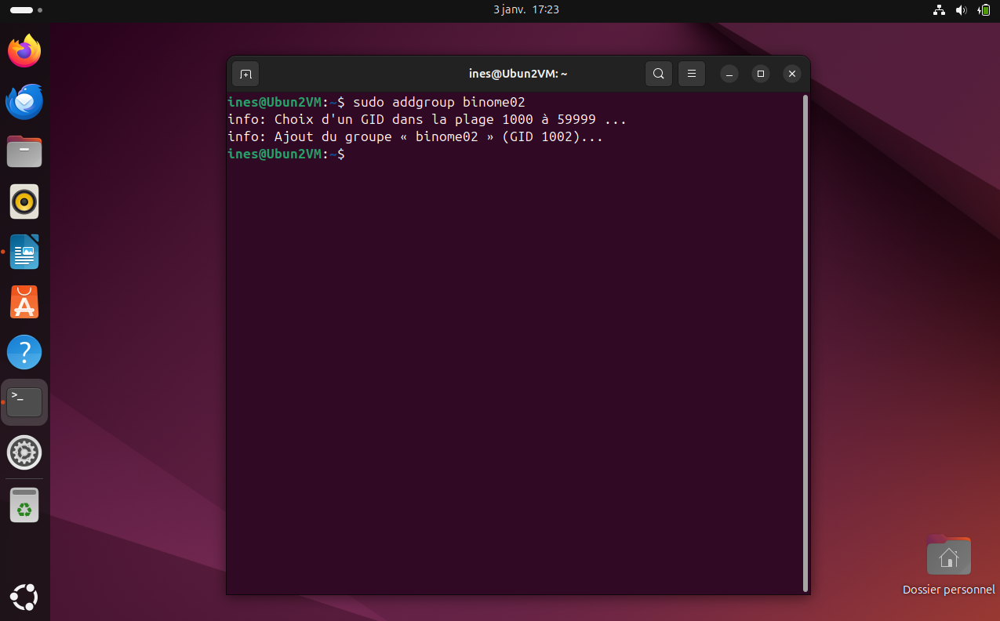

Dans cette première partie, nous allons répondre à toutes les questions
autour de la machine virtuelle et du concept de la virtualisation.
Définition de la virtualisation
La virtualisation permet de simuler sur un ordinateur un ou plusieurs environnement avec des systèmes
d'exploitations différents. Elle est très utilisée dans la gestion de ressources volumineuses.
Les Hyperviseurs permettent de gérer la virtualisation et la création de ces MV.
Il existe 3 types de virtualisation différents chez les hyperviseurs :
Le type 1 est une virtualisation qui accède directement aux ressources de la machine pour
créer une machine virtuelle sans passer par le système d'exploitation.
Le type 2 s'effectue depuis une application permettant de gérer les machines virtuelles
(VirtualBox, VMWare,...). Il passe par le Système d'exploitation pour gérer les ressources et demandes des machines virtuelles.
Le type 1-2, aussi appelé Hybride, reprend les caractéristiques des deux types mentionnés plus tôt.
Il s'exécute depuis une application mais à un accès direct aux ressources matérielles de l'ordinateur.
Différence entre émulateur, simulateur et outil de virtualisation
Un émulateur permet de copier les capacités physiques d'un système à l'identique pour pouvoir
lancer des jeux dessus. On imite le plus possible les capacités de la machine émulée.
Un simulateur est une représentation virtuelle d'un fonctionnement réel. Par exemple,
le simulateur de vol Microsoft ; il nous permet de simuler quelque de chose de la vraie vie (conduire un avion)
depuis notre ordinateur (de manière virtuelle).
La virtualisation se base sur les capacités de la machine hôte : entre autre, les capacités de la machine
virtuelle dépend des capacités de la machine hôte.
Type de virtualisation pour les environnements VirtualBox, VmWare Workstation et Stratus
L'environnement VirtualBox utilise une virtualisation de type 2, c'est-à-dire qu'on utilise un
logiciel pour créer des machines virtuelles.
VMWare Workstation utilise aussi une virtualisation de type 2 ; les machines virtuelles sont
isolées dans le logiciel VMWare.
Stratus utilise une virtualisation de type 1. L'entreprise ne produit pas de logiciel mais
plutôt des composants simplifiant et rendant la virtualisation plus rapide.
Forme/lieu de sauvegarde de la machine virtuelle créée
Les lieux de sauvegardes (aussi appelés Snapshot) permettent d'enregistrer l'état d'une machine virtuelle.
Elle permet de sauvegarder ce qui se passe actuellement dans la machine virtuel pour pouvoir
relancer la machine dans le même état.
Au début de l'utilisation de notre Machine Virtuelle, nous n'avons pas utilisé de snapshots, bien qu'ils sont très
pratiques, car nous n'avons pas fait de procédure pouvant faire planter la machine virtuelle (et qui nécessiterait
donc de relancer une sauvegarde instantanée).
Cependant, Nous avons ensuite utilisé les Snapshots pour éviter d'écrire à nouveau le mot de passe du compte par défaut.
La machine virtuelle a été stockée par défaut dans le fichier VirtualBox, où se trouve toutes les autres
machines crées plus tôt. Elle est stockée localement sur mon ordinateur portable, cependant, nous avons une
sauvegarde de la boite virtuelle sur un disque dur externe.
Il nous était impossible de sauvegarder l'intégrité de la machine virtuelle sur le cloud dû à des limitations sur
le stockage (impossible de stocker 25go de données sur un cloud pouvant stocker 15Go de données).

On y retrouve la machine "SAE_S1_03" créée plus bas.
Lorsqu'on clique sur le fichier, on observe plusieurs fichiers :
Un dossier Logs
Un fichier nommé SAE_S1_03.vbox
un fichier SAE_S1_03.vbox-prev
SAE_S1_03.vdi
Le premier fichier correspond aux paramètres de la machine virtuelle que nous avons créés.
(La mémoire allouée, le nom,...)
Le second permet de montrer un aperçu de la boîte virtuelle dans une petite fenêtre dédiée lorsqu'on
l'exécute dans VirtualBox.
Le troisième fichier est le disque virtuel. Il contient toutes les données de la boîte virtuelle.
Etapes d'installation de la machine
Dans cette page, nous allons vous détailler toutes les étapes d'installation de notre machine virtuelle, de
l'installation de la distribution, du logiciel de virtualisation, de la configuration de notre machine à l'activation de cette dernière.
Installation de la distribution Ubuntu
Pour créer notre machine virtuelle, nous avons tout d'abord eu
besoin d'obtenir une distribution au choix.
Dans notre cas, nous avons choisi la distribution Ubuntu,
qui est régliièrement mise à jour et qui est idéale
dans le contexte de déploiement d'un site web.
Nous avons obtenue la distribution Ubuntu depuis le site web officiel
https://www.ubuntu-fr.org/.
Une fois Ubuntu installée sous forme d'ISO (une image disque), on devra maintenant choisir notre logiciel pour créer la machine Virtuelle.
Dans notre cas, nous avons choisi VirtualBox,
car c'est un logiciel que j'ai déjà pris en main et dont l'installation est très guidée.
Nous avons installé VirtualBox depuis le site web officiel
https://www.virtualbox.org/wiki/Downloads.
Une fois VirtualBox installé, on a créé notre machine Virtuelle.
Configuration de la machine
Nous avons configuré son chemin d'accès et choisi l'image disque de notre choix, donc la distribution Ubuntu. Le logiciel reconnaît immédiatement le type (Linux) et la version de l'image disque (Ubuntu 64 bit), ce qui facilite la configuration.
Nous avons passé le téléchargement guidé pour pouvoir créé notre propre utilisateur directement dans Ubuntu.
Pour la configuration matérielle, nous avons décider d'allouer 4096Mo de mémoire vive, soit 4go,
afin que le système puisse avoir la mémoire nécessaire, et nous avons choisi un seli CPU car
nous n'avons pas besoin de plusieurs cœurs.
Ensuite, nous allouerons 25Go pour le disque virtuel de la machine car c'est tout ce qui me reste de stockage sur
mon ordinateur portable. On pré alloue toute la mémoire en avance afin d'éviter de manquer d'espace sur notre
machine virtuelle si nous installons d'autre processus sur notre machine hôte.
Une fois la configuration terminée, nous avons exécuté la machine virtuelle
et avons configuré Ubuntu avant de l'installer.
Installation de Ubuntu sur la machine
Utilisation de la machine virtuelle
Création d'un compte administrateur
Pour créer un compte administrateur, nous avons exécuté le terminal et avons utilisé la commande adduser [compte],
précédé de sudo permettant d'utiliser les droits de super utilisateur pour exécuter la commande.
Cependant, nous avons remarqué que le compte créée n'est qu'un simple utilisateur.
Pour le transformer en super user, nous avons utilisé la commande usermod -aG [groupe][utilisateur], qui
permet de modifier un utilisateur existant. Le paramètre -aG nous permet de rajouter l'utilisateur dans un
groupe. Nous l'avons inclus dans le groupe sudo, qui désigne les super utilisateurs.
Ainsi, nous avons un compte administrateur *admin_grp03_binome02*.
Création de deux utilisateurs
Pour créer deux utilisateurs basiques (respectivement binome02_1 et binome02_2),
nous avons tout d'abord utilisé addgroup [nom_groupe] où nous
réunirons les utilisateurs.

Nous avons ensuite réutilisé adduser [nom] deux fois pour créer nos utilisateurs.
Pour les rajouter dans le groupe, il nous a suffi d'utiliser adduser [nom] [groupe]
avec les deux différents utilisateurs.
Personnalisation de l'invite de commande
Pour personnaliser l'invite de commande, nous avons d'abord utilisé la variable PS1.
Après plusieurs recherches internet et de nombreux essais, nous avons réussi à personnaliser
le shell avec des couleurs et des informations pertinentes :
Pour modifier le shell, nous avons utilisé les structures de coloration \e[(nombre)m, où \e
définit le point de départ de coloration, [(nombre) désigne un nombre ou numéro de colieur
de style ou de fond (on peut ajouter plusieurs valeurs si elles sont séparées par un ;) et enfin le m
qui définit la fin de la coloration.
Nous avons ajouté des petits ajustements pour obtenir le résultat final :
Nous avons adopté la disposition suivante :
Affichage de la date en cyan pâle
Affichage de l'heure en bleu pâle
Affichage du nom de l'utilisateur en magenta pâle
Affichage du nom de la machine (séparé par un caractère spécial) en magenta pâle
Affichage du répertoire courant en jaune pâle
Cependant, après avoir personnalisé l'invite de commande, éteint et rallumé la VM quelques jours
après, nous avons constaté que les changements étaient temporaires.
Nous avons donc dû passer par le shell pour modifier de manière permanente le shell.
Pour cela, nous avons fait des recherches et nous avons trouvé que le fichier de configuration du bash est
localisé dans le répertoire domicile, sous le nom .bashrc.
En cas d'erreurs, il est nécessaire de pouvoir restaurer le fichier original :
nous avons donc créer une backup (une sauvegarde/copie) du fichier nommé .bashrc.bak
(l'extension .bak précise que nous avons bien une sauvegarde).
Nous avons ensuite appelé nano sur le fichier .bashrc. nano permet de visualiser
et de modifier le fichier depuis le terminal.
Nous avons simplement ajouté à la fin du script la ligne export PS1='\e[90m[\e[36;1m\d\e[0m\e[90m]
\e[90m(\e[94;1m\t\e[0m\e[90m) \e[95;1m\u◊\h\e[0m:\e[93m\W> \e[0m' pour forcer le script à exporter
la variable PS1 dans l'environnement à chaque exécution du bash.
Après avoir redémarré ma machine virtuelle et réexécuter le terminal,
on peut constater que les changements du shell ont été appliqués.